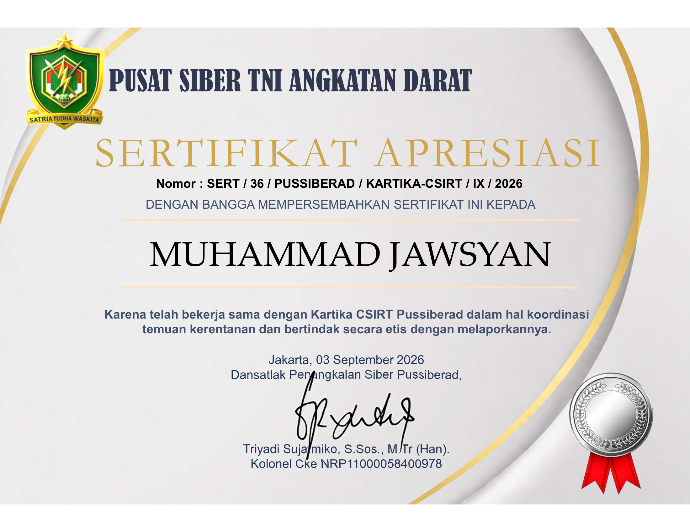
Predikat Khusus TNI AD
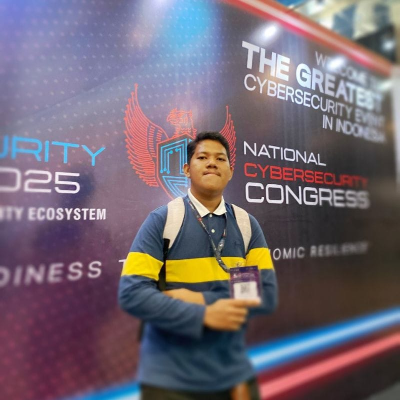
✓Cyber Security & AI Enthusiast
Mahasiswa Universitas Paramadina
Dokumentasi sertifikat apresiasi predikat khusus dari instansi siber militer dan sipil, kemenangan perlombaan CTF, serta lisensi profesional.
| No | Tanggal | Nama Prestasi / Sertifikasi | Instansi / Penyelenggara | No. Registrasi / Dokumen | Kategori | Status Verifikasi |
|---|---|---|---|---|---|---|
| 01 | 03 Sep 2026 |
Sertifikat Apresiasi: Temuan Kerentanan & Pelaporan Etis ★ Predikat Khusus Keamanan Siber |
PUSSIBER TNI ANGKATAN DARAT (Kartika CSIRT) | SERT/36/PUSSIBERAD/KARTIKA-CSIRT/IX/2026 |
Predikat Khusus | ✓ Dokumen Sah (PDF) |
| 02 | 20 Agu 2026 |
Sertifikat Apresiasi: Pelaporan Vulnerability Sistem Elektronik ★ Predikat Khusus Pemprov DKI Jakarta |
BSSA Diskominfotik Provinsi DKI Jakarta | 113/BUG/BSSA/VIII/2026 |
Predikat Khusus | ✓ Dokumen Sah (PDF) |
| 03 | 28 Jun 2026 |
Juara 4 - 4th Place Scholar Battle Winner Capture The Flag (CTF) Competition - ZERO DAY |
DSG (Dunia Siber Gemilang) & Filkom | ZD-2026-CHAMP-04 |
Kompetisi CTF | Terverifikasi Juara |
| 04 | 29 Jun 2026 | SEVIMA Cyber Threat Intelligence sebagai Core Intel IT | SEVIMA (Sentra Vidya Utama) | 1000/SRTFK/SVM/VI/2026 |
Webinar & MOOC | Lulus Peserta |
| 05 | 22 Jun 2026 | SEVIMA Security Challenge: AI Disruptions on Cyber Security | SEVIMA (Sentra Vidya Utama) | 994/SRTFK/SVM/VI/2026 |
Webinar & MOOC | Lulus Peserta |
| 06 | 15 Jun 2026 | SEVIMA Security Challenge 2026 (10 JP, Online MOOC) | SEVIMA (Sentra Vidya Utama) | 903/SRTFK/SVM/VI/2026 |
Pelatihan Jam Pelajaran | 10 JP Selesai |
| 07 | 19 Jun 2024 | CORE Cybersecurity Foundations | Hackviser Online Security Academy | HV-CORE-CERT-2024 |
Sertifikasi Global | Certified |
| 08 | 2024 | Certified Ransomware Protection Officer (CRPO) | EU Cyber Academy (European Cybersecurity) | CRPO-EU-CERT-64D6 |
Sertifikasi Spesialis | Certified |
| 09 | 31 Jan 2024 | Generative AI for Youth Training | Microsoft AI Skills | MS-GENAI-2024-ID |
Pelatihan AI | Certified |
| 10 | 21 Jan 2024 | Introduction to Cybersecurity Course Completion | Cisco Networking Academy | CISCO-NETACAD-INTRO |
Kursus Industri | Completed |
| 11 | 20 Jan 2024 | Bootcamp Online Cyber Security Beginner Batch 1 | Merdeka Siber Academy | MS/BOCSE/COE/24/2026/011 |
Bootcamp Intensif | Lulus Predikat Baik |
| Total Dokumen Prestasi & Sertifikasi Terdaftar: | 11 Dokumen Terverifikasi Sah | |||||
Klik tombol "Lihat Sertifikat" untuk meninjau berkas beresolusi tinggi atau mengunduh salinan resmi dokumen PDF.

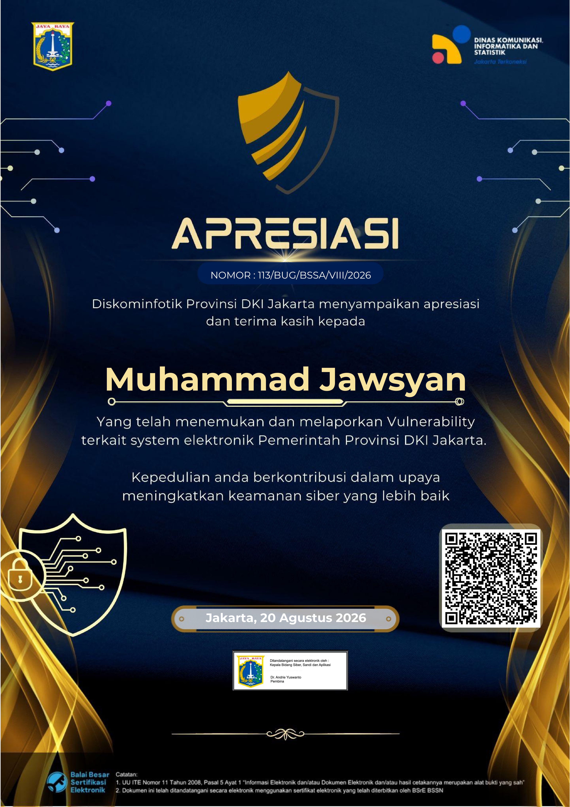
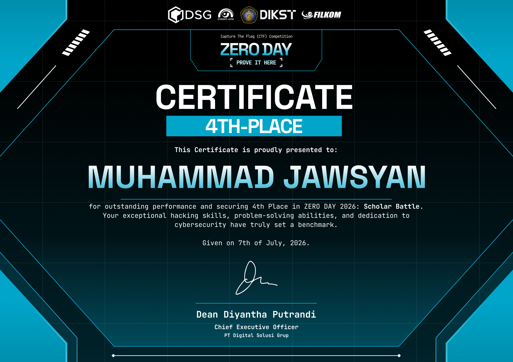
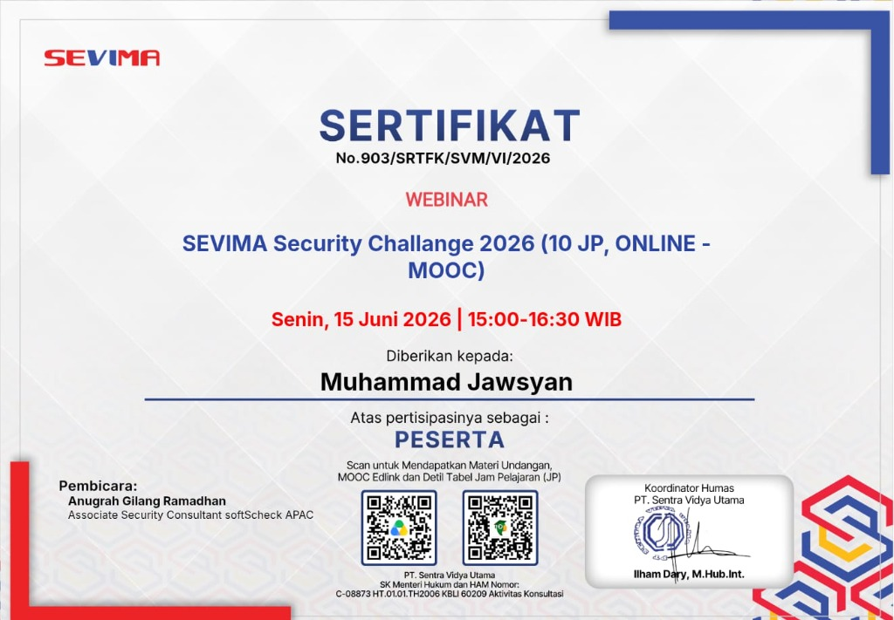
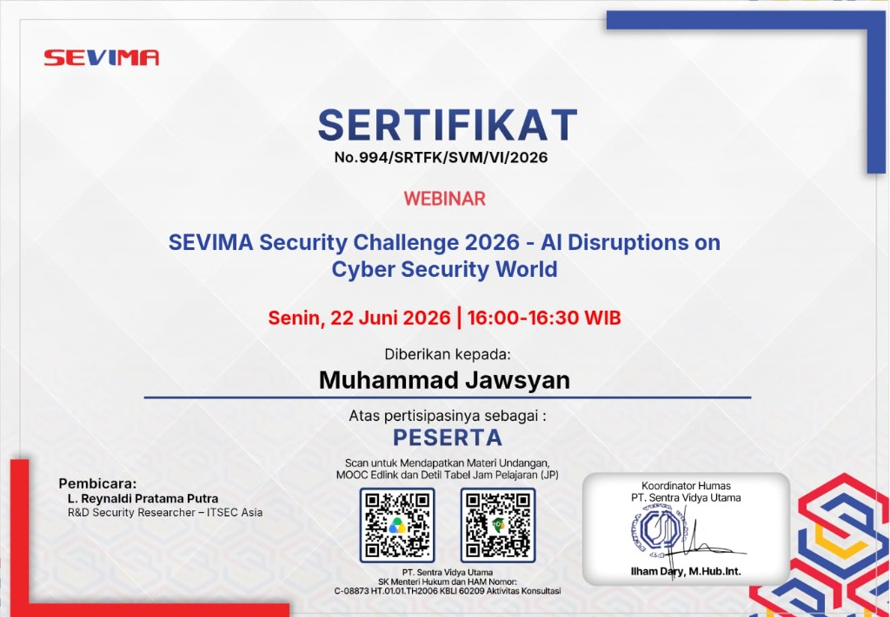
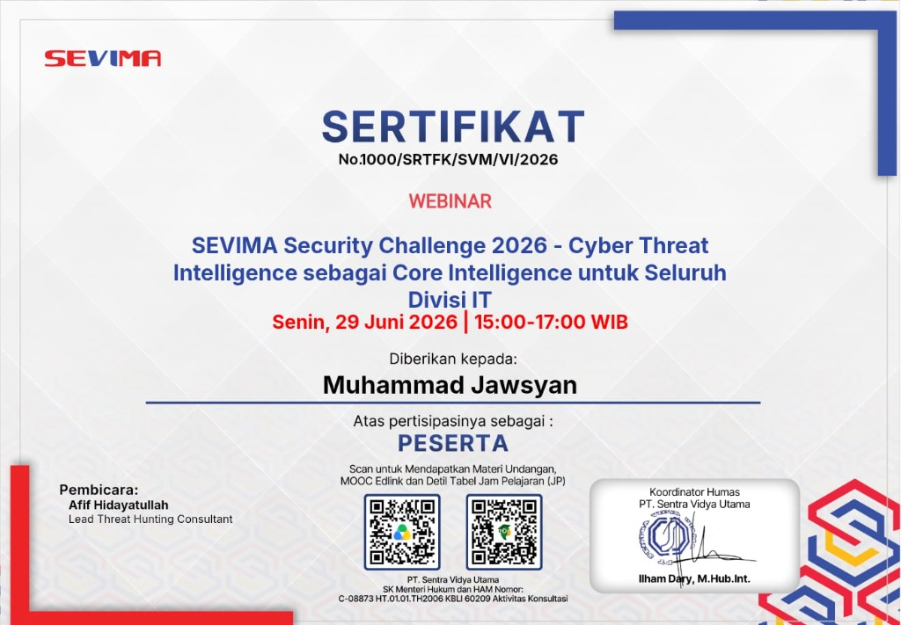
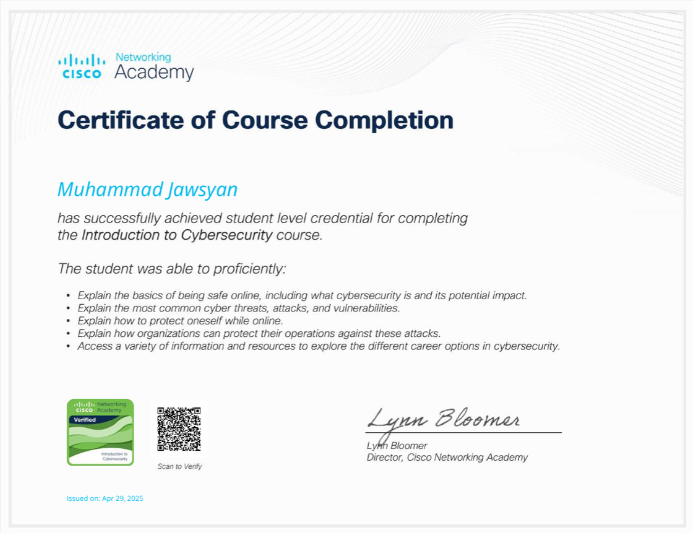
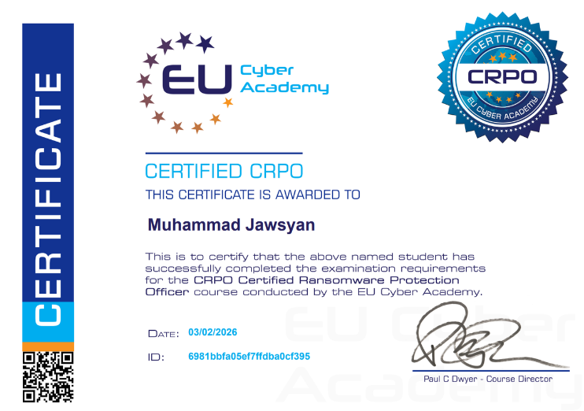
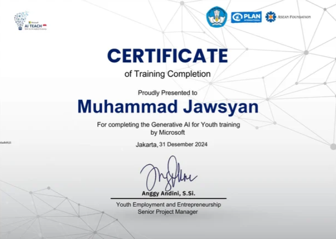
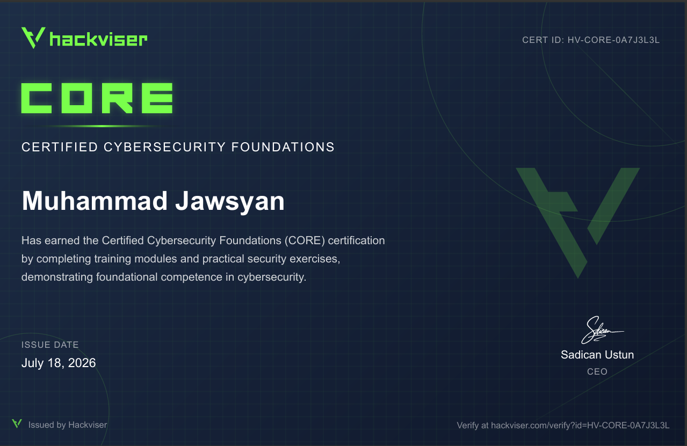
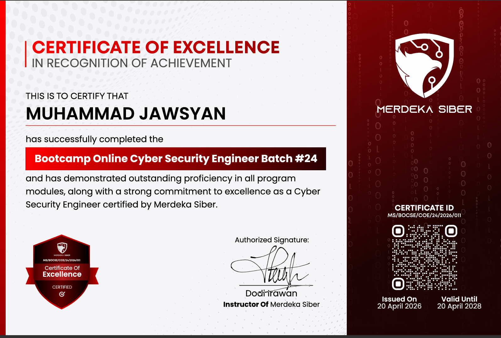